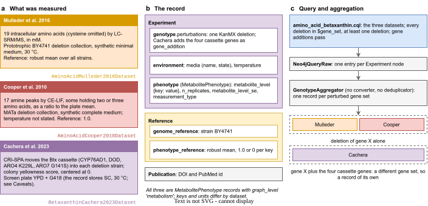
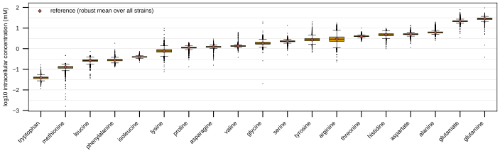
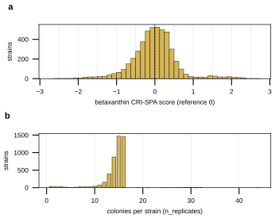
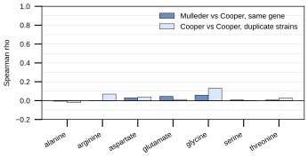

Amino acids and betaxanthin
Three datasets describe the small-molecule content of S. cerevisiae deletion strains. AminoAcidMulleder2016Dataset records the intracellular concentration of 19 amino acids in the prototrophic deletion collection (Mulleder et al. 2016). AminoAcidCooper2010Dataset records free amine-containing pools of the deletion collection as a ratio to the plate mean (Cooper et al. 2010). BetaxanthinCachera2023Dataset records the yellow color of deletion strains that carry a transferred betaxanthin pathway (Cachera et al. 2023). All three store a MetabolitePhenotype and meet in one supported query.
Terms used below:
Btx cassette: the four betaxanthin genes Cachera et al. integrate at chromosomal site XII-5 of every strain: CYP76AD1 (from Beta vulgaris), DOD (from Mirabilis jalapa), and feedback-resistant alleles of the yeast genes ARO4 (K229L) and ARO7 (G141S).
CE-LIF: capillary electrophoresis with laser-induced fluorescence, the Cooper 2010 platform; amine metabolites are labeled with NBD-F and read as peaks.
CRI-SPA: the Cachera 2023 method that moves a cassette from a donor strain into every strain of an arrayed library by mating and selection.
entry: one experiment and its reference, as the query returns it.
LC-SRM/MS: liquid chromatography with selected reaction monitoring mass spectrometry, the Mulleder 2016 platform.
MCD robust mean: the Minimum Covariance Determinant estimate of the mean over all strains; Mulleder et al. use it as the unperturbed level of each amino acid.
processed record: every entry of one perturbed gene set, grouped by
GenotypeAggregator.reference: the level a record’s value is compared with (
reference.phenotype_reference): the MCD robust mean (Mulleder), 1.0 (Cooper, the plate mean) or 0 (Cachera, the population-centered score).
What the experiments measured


Fig. 4 a, the three sources: the Mulleder 2016 LC-SRM/MS amino-acid metabolome, the Cooper 2010 CE-LIF amine peaks, and the Cachera 2023 CRI-SPA betaxanthin screen with its Btx cassette. b, the stored record, an experiment (genotype, environment, MetabolitePhenotype), its reference (genome and reference level) and the publication. c, the supported query and the aggregation, under which a Mulleder and a Cooper entry of the same deletion share one processed record while a Cachera entry, whose gene set also holds the cassette genes, is a record of its own. Diagram: notes/assets/drawio/showcase-amino-acid-betaxanthin.drawio, composed from the loaders and the query, not redrawn from a published figure.
The records
One record of each dataset as its loader stored it, re-validated through the pydantic class and printed from model_dump(). The three dumps show the same deletion, the first gene held by all three stores. Each dump is cut to the named fields, and each cut is marked with the number of fields it hides.
Amino acids (Mulleder 2016)
Record 1 of data/torchcell/amino_acid_mulleder2016/processed/lmdb, produced by
def read_records(processed_dir: str) -> list[dict[str, Any]]:
"""Every record of a built ExperimentDataset, interned pointers resolved.
Mirrors ``ExperimentDataset.get_single_item``: pickled records from ``lmdb``, the
sibling ``interned`` env (when present) loaded once, ``resolve_interned`` splicing
each ``$ref`` back. A store with no ``interned`` env is a legacy inline store.
"""
interned: dict[str, Any] = {}
interned_dir = osp.join(processed_dir, "interned")
if osp.isdir(interned_dir):
env = lmdb.open(interned_dir, readonly=True, lock=False)
with env.begin() as txn:
for key, value in txn.cursor():
interned[key.decode()] = pickle.loads(value)
env.close()
env = lmdb.open(osp.join(processed_dir, "lmdb"), readonly=True, lock=False)
records: list[dict[str, Any]] = []
with env.begin() as txn:
n = txn.stat()["entries"]
for idx in range(n):
raw = txn.get(f"{idx}".encode())
assert raw is not None, f"missing key {idx} in {processed_dir}"
records.append(resolve_interned(pickle.loads(raw), interned))
env.close()
return records
def dump_record(record: dict[str, Any], keep: tuple[str, ...]) -> str:
"""Debugger-style tree of a stored record, cut to the dotted paths in ``keep``.
The experiment and reference are re-validated through the pydantic classes the
dataset stored them as (``EXPERIMENT_TYPE_MAP`` / ``EXPERIMENT_REFERENCE_TYPE_MAP``)
and dumped with ``model_dump()``; the publication dict is used as stored. At every
level, the number of fields cut is printed as a comment.
"""
experiment = EXPERIMENT_TYPE_MAP[record["experiment"]["experiment_type"]](
**record["experiment"]
)
reference = EXPERIMENT_REFERENCE_TYPE_MAP[
record["reference"]["experiment_reference_type"]
](**record["reference"])
full = {
"experiment": experiment.model_dump(),
"reference": reference.model_dump(),
"publication": record["publication"],
}
kept: dict[str, Any] = {}
for path in keep:
node = kept
for part in path.split("."):
node = node.setdefault(part, {})
node["__leaf__"] = _pick(full, path)
return "\n".join(_render(kept, full, 0))
records = read_records(osp.join(DATA_ROOT, 'data/torchcell/amino_acid_mulleder2016', 'processed'))
print(dump_record(records[1], keep=KEEP)) # KEEP: the 25 paths printed below
experiment:
experiment_type = 'metabolite'
dataset_name = 'AminoAcidMulleder2016Dataset'
genotype:
perturbations[0]:
systematic_gene_name = 'YAL004W'
perturbed_gene_name = 'YAL004W'
perturbation_type = 'kanmx_deletion'
# ... 7 other field(s) cut
environment:
media:
name = 'SM agar (synthetic minimal: 6.7 g/L YNB without amino acids + 2% glucose + 2% agar)'
state = 'solid'
base_medium = 'SM'
# ... 4 other field(s) cut
temperature:
value = 30.0
# ... 1 other field(s) cut
# ... 5 other field(s) cut
phenotype:
graph_level = 'metabolism'
label_name = 'metabolite_level'
measurement_type = 'intracellular_concentration_mM'
metabolite_level:
arginine = 2.3754037898344302
glutamine = 27.583021141585
tyrosine = 3.18059975643722
# ... 16 other field(s) cut
n_replicates:
arginine = 1
glutamine = 1
tyrosine = 1
# ... 16 other field(s) cut
metabolite_level_se = None
# ... 3 other field(s) cut
reference:
experiment_reference_type = 'metabolite'
genome_reference:
strain = 'BY4741'
# ... 2 other field(s) cut
phenotype_reference:
metabolite_level:
arginine = 2.95610903
glutamine = 28.51698198
tyrosine = 2.67655545
# ... 16 other field(s) cut
# ... 8 other field(s) cut
# ... 2 other field(s) cut
publication:
doi = '10.1016/j.cell.2016.09.007'
# ... 3 other field(s) cut
Amine peaks (Cooper 2010)
Record 2958 of data/torchcell/amino_acid_cooper2010/processed/lmdb, produced by
def read_records(processed_dir: str) -> list[dict[str, Any]]:
"""Every record of a built ExperimentDataset, interned pointers resolved.
Mirrors ``ExperimentDataset.get_single_item``: pickled records from ``lmdb``, the
sibling ``interned`` env (when present) loaded once, ``resolve_interned`` splicing
each ``$ref`` back. A store with no ``interned`` env is a legacy inline store.
"""
interned: dict[str, Any] = {}
interned_dir = osp.join(processed_dir, "interned")
if osp.isdir(interned_dir):
env = lmdb.open(interned_dir, readonly=True, lock=False)
with env.begin() as txn:
for key, value in txn.cursor():
interned[key.decode()] = pickle.loads(value)
env.close()
env = lmdb.open(osp.join(processed_dir, "lmdb"), readonly=True, lock=False)
records: list[dict[str, Any]] = []
with env.begin() as txn:
n = txn.stat()["entries"]
for idx in range(n):
raw = txn.get(f"{idx}".encode())
assert raw is not None, f"missing key {idx} in {processed_dir}"
records.append(resolve_interned(pickle.loads(raw), interned))
env.close()
return records
def dump_record(record: dict[str, Any], keep: tuple[str, ...]) -> str:
"""Debugger-style tree of a stored record, cut to the dotted paths in ``keep``.
The experiment and reference are re-validated through the pydantic classes the
dataset stored them as (``EXPERIMENT_TYPE_MAP`` / ``EXPERIMENT_REFERENCE_TYPE_MAP``)
and dumped with ``model_dump()``; the publication dict is used as stored. At every
level, the number of fields cut is printed as a comment.
"""
experiment = EXPERIMENT_TYPE_MAP[record["experiment"]["experiment_type"]](
**record["experiment"]
)
reference = EXPERIMENT_REFERENCE_TYPE_MAP[
record["reference"]["experiment_reference_type"]
](**record["reference"])
full = {
"experiment": experiment.model_dump(),
"reference": reference.model_dump(),
"publication": record["publication"],
}
kept: dict[str, Any] = {}
for path in keep:
node = kept
for part in path.split("."):
node = node.setdefault(part, {})
node["__leaf__"] = _pick(full, path)
return "\n".join(_render(kept, full, 0))
records = read_records(osp.join(DATA_ROOT, 'data/torchcell/amino_acid_cooper2010', 'processed'))
print(dump_record(records[2958], keep=KEEP)) # KEEP: the 28 paths printed below
experiment:
experiment_type = 'metabolite'
dataset_name = 'AminoAcidCooper2010Dataset'
genotype:
perturbations[0]:
systematic_gene_name = 'YAL004W'
perturbed_gene_name = 'YAL004W'
perturbation_type = 'kanmx_deletion'
# ... 7 other field(s) cut
environment:
media:
name = 'SC minus Ala/Asn/Cys/Gln/Gly/Pro/Ura (Cooper 2010 synthetic complete recipe)'
state = 'liquid'
base_medium = 'SC'
# ... 4 other field(s) cut
temperature = None
provenance_gaps[0]:
field = 'temperature'
reason = 'not_reported_by_primary'
# ... 3 other field(s) cut
duration_hours = 16.0
# ... 3 other field(s) cut
phenotype:
graph_level = 'metabolism'
label_name = 'metabolite_level'
measurement_type = 'ce_lif_peak_area_ratio_to_plate_mean'
metabolite_level:
arginine = 1.355684854
glutamine+valine = 1.508307114
asparagine+tyrosine = 1.361483185
# ... 12 other field(s) cut
n_replicates:
arginine = 1
glutamine+valine = 1
asparagine+tyrosine = 1
# ... 12 other field(s) cut
metabolite_level_se = None
# ... 3 other field(s) cut
reference:
experiment_reference_type = 'metabolite'
genome_reference:
strain = 'BY4741'
# ... 2 other field(s) cut
phenotype_reference:
metabolite_level:
arginine = 1.0
glutamine+valine = 1.0
asparagine+tyrosine = 1.0
# ... 12 other field(s) cut
# ... 8 other field(s) cut
# ... 2 other field(s) cut
publication:
doi = '10.1101/gr.105825.110'
# ... 3 other field(s) cut
Betaxanthin (Cachera 2023)
Record 3462 of data/torchcell/betaxanthin_cachera2023/processed/lmdb, produced by
def read_records(processed_dir: str) -> list[dict[str, Any]]:
"""Every record of a built ExperimentDataset, interned pointers resolved.
Mirrors ``ExperimentDataset.get_single_item``: pickled records from ``lmdb``, the
sibling ``interned`` env (when present) loaded once, ``resolve_interned`` splicing
each ``$ref`` back. A store with no ``interned`` env is a legacy inline store.
"""
interned: dict[str, Any] = {}
interned_dir = osp.join(processed_dir, "interned")
if osp.isdir(interned_dir):
env = lmdb.open(interned_dir, readonly=True, lock=False)
with env.begin() as txn:
for key, value in txn.cursor():
interned[key.decode()] = pickle.loads(value)
env.close()
env = lmdb.open(osp.join(processed_dir, "lmdb"), readonly=True, lock=False)
records: list[dict[str, Any]] = []
with env.begin() as txn:
n = txn.stat()["entries"]
for idx in range(n):
raw = txn.get(f"{idx}".encode())
assert raw is not None, f"missing key {idx} in {processed_dir}"
records.append(resolve_interned(pickle.loads(raw), interned))
env.close()
return records
def dump_record(record: dict[str, Any], keep: tuple[str, ...]) -> str:
"""Debugger-style tree of a stored record, cut to the dotted paths in ``keep``.
The experiment and reference are re-validated through the pydantic classes the
dataset stored them as (``EXPERIMENT_TYPE_MAP`` / ``EXPERIMENT_REFERENCE_TYPE_MAP``)
and dumped with ``model_dump()``; the publication dict is used as stored. At every
level, the number of fields cut is printed as a comment.
"""
experiment = EXPERIMENT_TYPE_MAP[record["experiment"]["experiment_type"]](
**record["experiment"]
)
reference = EXPERIMENT_REFERENCE_TYPE_MAP[
record["reference"]["experiment_reference_type"]
](**record["reference"])
full = {
"experiment": experiment.model_dump(),
"reference": reference.model_dump(),
"publication": record["publication"],
}
kept: dict[str, Any] = {}
for path in keep:
node = kept
for part in path.split("."):
node = node.setdefault(part, {})
node["__leaf__"] = _pick(full, path)
return "\n".join(_render(kept, full, 0))
records = read_records(osp.join(DATA_ROOT, 'data/torchcell/betaxanthin_cachera2023', 'processed'))
print(dump_record(records[3462], keep=KEEP)) # KEEP: the 41 paths printed below
experiment:
experiment_type = 'metabolite'
dataset_name = 'BetaxanthinCachera2023Dataset'
genotype:
perturbations[0]:
systematic_gene_name = 'CYP76AD1'
perturbed_gene_name = 'CYP76AD1'
perturbation_type = 'gene_addition'
source_organism = 'Beta vulgaris'
integration_locus = 'XII-5'
# ... 11 other field(s) cut
perturbations[1]:
systematic_gene_name = 'DOD'
perturbed_gene_name = 'DOD'
perturbation_type = 'gene_addition'
source_organism = 'Mirabilis jalapa'
integration_locus = 'XII-5'
# ... 11 other field(s) cut
perturbations[2]:
systematic_gene_name = 'YAL004W'
perturbed_gene_name = 'YAL004W'
perturbation_type = 'kanmx_deletion'
# ... 7 other field(s) cut
perturbations[3]:
systematic_gene_name = 'YBR249C'
perturbed_gene_name = 'ARO4'
perturbation_type = 'gene_addition'
source_organism = 'Saccharomyces cerevisiae'
integration_locus = 'XII-5'
variant = 'K229L'
# ... 10 other field(s) cut
perturbations[4]:
systematic_gene_name = 'YPR060C'
perturbed_gene_name = 'ARO7'
perturbation_type = 'gene_addition'
source_organism = 'Saccharomyces cerevisiae'
integration_locus = 'XII-5'
variant = 'G141S'
# ... 10 other field(s) cut
environment:
media:
name = 'SC'
state = 'solid'
base_medium = None
# ... 4 other field(s) cut
temperature:
value = 30.0
# ... 1 other field(s) cut
# ... 5 other field(s) cut
phenotype:
graph_level = 'metabolism'
label_name = 'metabolite_level'
measurement_type = 'cri_spa_corrected_fluorescence_intensity_24h'
metabolite_level:
betaxanthin = -0.1380014810751501
metabolite_level_se:
betaxanthin = 0.15193368404328209
n_replicates:
betaxanthin = 14
# ... 3 other field(s) cut
reference:
experiment_reference_type = 'metabolite'
genome_reference:
strain = 'BY4741'
# ... 2 other field(s) cut
phenotype_reference:
metabolite_level:
betaxanthin = 0.0
# ... 8 other field(s) cut
# ... 2 other field(s) cut
publication:
doi = '10.1093/nar/gkad656'
# ... 3 other field(s) cut
The data
Counts and distributions over the three dev-tree stores. The Caveats section says where a store differs from the served release.
Counts per dataset (dev stores)
dataset |
records |
deleted genes |
metabolite keys |
|
medium ( |
temperature |
parent strain |
|
SE stored |
|---|---|---|---|---|---|---|---|---|---|
|
4,678 |
4,678 |
19 |
|
SM agar (synthetic minimal: 6.7 g/L YNB without amino acids + 2% glucose + 2% agar) (solid) |
30 °C |
BY4741 |
1 on every key |
none |
|
4,313 |
4,291 |
17 |
|
SC minus Ala/Asn/Cys/Gln/Gly/Pro/Ura (Cooper 2010 synthetic complete recipe) (liquid) |
not recorded (typed gap) |
BY4741 |
1 on every key |
none |
|
4,719 |
4,719 |
1 |
|
SC (solid) |
30 °C |
BY4741 |
1 to 44 |
4,719 records |
Deleted genes shared by the dev stores: Mulleder and Cooper 4,074, Mulleder and Cachera 4,477, Cooper and Cachera 4,249, all three 4,052, union 4,940.
Mulleder 2016, intracellular concentration (mM) per amino acid, phenotype.metabolite_level over every record, with reference.phenotype_reference.metabolite_level (the same on every record)
amino acid |
n |
min |
median |
mean |
max |
reference |
|---|---|---|---|---|---|---|
glutamine |
4,678 |
0.3834 |
28.24 |
27.95 |
95.48 |
28.52 |
glutamate |
4,678 |
3.435 |
21.47 |
21.81 |
77.99 |
21.6 |
alanine |
4,678 |
2.58 |
6.127 |
6.318 |
19.62 |
6.039 |
aspartate |
4,678 |
1.145 |
5.036 |
5.106 |
13.29 |
5.04 |
histidine |
4,678 |
0.9924 |
4.775 |
4.81 |
9.678 |
4.864 |
threonine |
4,678 |
2.262 |
3.996 |
4.02 |
10.16 |
3.994 |
arginine |
4,678 |
0.2302 |
2.917 |
3.19 |
18 |
2.956 |
tyrosine |
4,678 |
0.6797 |
2.742 |
2.863 |
19.98 |
2.677 |
serine |
4,678 |
0.499 |
2.277 |
2.282 |
13.47 |
2.312 |
glycine |
4,678 |
0.02028 |
1.83 |
1.912 |
19.75 |
1.844 |
valine |
4,678 |
0.3775 |
1.35 |
1.37 |
6.339 |
1.34 |
asparagine |
4,678 |
0.1585 |
1.224 |
1.227 |
2.934 |
1.223 |
proline |
4,678 |
0.1337 |
1.128 |
1.124 |
2.072 |
1.142 |
lysine |
4,678 |
0.07609 |
0.7733 |
0.8162 |
9.56 |
0.7674 |
isoleucine |
4,678 |
0.2195 |
0.3994 |
0.3997 |
0.7344 |
0.396 |
phenylalanine |
4,678 |
0.1281 |
0.2799 |
0.2814 |
1.836 |
0.2791 |
leucine |
4,678 |
0.03586 |
0.2677 |
0.2673 |
0.7432 |
0.2738 |
methionine |
4,678 |
0.00161 |
0.1265 |
0.124 |
0.4705 |
0.1303 |
tryptophan |
4,678 |
0.0116 |
0.03884 |
0.03898 |
0.1621 |
0.03898 |
Cooper 2010, peak-area ratio to the plate mean per peak, over the records that carry the key (reference 1.0 on every key)
peak key |
records |
exact zeros |
median |
mean |
max |
|---|---|---|---|---|---|
|
4,310 |
0 |
0.9803 |
0.9978 |
3.458 |
|
4,309 |
0 |
0.9631 |
0.9974 |
3.025 |
|
4,307 |
0 |
0.7702 |
1.016 |
14.44 |
|
4,305 |
0 |
0.8692 |
1.004 |
8.274 |
|
4,305 |
0 |
0.9538 |
1.005 |
4.812 |
|
4,305 |
0 |
0.9235 |
1.004 |
5.729 |
|
4,304 |
0 |
0.9504 |
1.006 |
5.065 |
|
4,297 |
0 |
0.9303 |
1.003 |
5.869 |
|
4,293 |
1 |
0.7147 |
1.023 |
15.11 |
|
4,276 |
1 |
1.459 |
2.142 |
20.07 |
|
4,030 |
36 |
0.8671 |
1.055 |
36.18 |
|
3,992 |
74 |
0.8624 |
1.084 |
47.13 |
|
3,981 |
21 |
0.864 |
1.094 |
31.64 |
|
3,960 |
57 |
1.298 |
1.979 |
57.41 |
|
3,305 |
233 |
0.7597 |
1.298 |
40.62 |
|
2,831 |
35 |
0.9836 |
1.512 |
24.52 |
|
2,004 |
201 |
0.6492 |
2.229 |
83 |
Cooper build ledger (preprocess/dropped_records.json): 4,382 Table 4 rows, 4,313 kept, 22 dropped by the name resolver, 47 kept under a renamed systematic name, 47 later rows of a duplicated identifier written to the ledger and not served, 5 identifiers normalized.
Cachera 2023, betaxanthin CRI-SPA score
quantity |
n |
min |
q1 |
median |
mean |
q3 |
max |
|---|---|---|---|---|---|---|---|
betaxanthin score |
4,719 |
-2.6 |
-0.3166 |
-0.007543 |
-0.0143 |
0.2851 |
2.704 |
colonies per strain (n_replicates) |
4,719 |
1 |
14 |
15 |
14.46 |
16 |
44 |
standard error (non-NaN) |
4,681 |
0.02447 |
0.1436 |
0.2021 |
0.2142 |
0.2705 |
1.907 |
38 Cachera records store a NaN standard error (one colony, so no spread).
Mulleder and Cooper on the same deletion: Spearman correlation between the Mulleder concentration and the Cooper ratio over the genes both stores hold, for each Cooper key that names one amino acid
amino acid |
genes |
Spearman rho |
|---|---|---|
alanine |
4,071 |
-0.006 |
arginine |
4,067 |
0.000 |
aspartate |
3,756 |
0.030 |
glutamate |
4,044 |
0.045 |
glycine |
4,067 |
0.059 |
serine |
3,778 |
0.007 |
threonine |
3,773 |
0.006 |
Cooper against itself: the same statistic between the kept row and the later row of each duplicated Table 4 identifier (two strains of one gene in the collection; the later rows are in the build ledger, not served)
amino acid |
pairs |
Spearman rho |
|---|---|---|
alanine |
47 |
-0.021 |
arginine |
47 |
0.070 |
aspartate |
39 |
0.037 |
glutamate |
47 |
0.012 |
glycine |
47 |
0.133 |
serine |
41 |
0.002 |
threonine |
42 |
0.027 |
Btx-cassette genes on every Cachera record: CYP76AD1, DOD, YBR249C, YPR060C. Cachera records whose deletion is of a cassette gene’s native copy: 2 (YBR249C (ARO4), YPR060C (ARO7)).


Fig. 5 Intracellular amino-acid concentration in AminoAcidMulleder2016Dataset, log10 mM, one box per amino acid over 4,678 deletion strains (box: quartiles; whiskers: 1.5 times the interquartile range; points beyond them drawn individually), ordered by median. Diamonds: the record reference, the robust (Minimum Covariance Determinant) mean over all strains.


Fig. 6 Betaxanthin in BetaxanthinCachera2023Dataset. a, the CRI-SPA score, 0.125-wide bins (n = 4,719, median -0.007543); the dashed line is the reference level 0. b, colonies behind each strain’s score (n_replicates, median 15).


Fig. 7 Spearman correlation per amino acid. Dark: the Mulleder 2016 concentration against the Cooper 2010 peak ratio over the deletions both stores hold (3,756 to 4,071 genes). Light: Cooper against itself, the kept row against the later row of each duplicated Table 4 identifier (39 to 47 pairs). Per-key values are in the tables above.
Querying the graph
The supported query ships with the package as torchcell/knowledge_graphs/queries/amino_acid_betaxanthin.cql. It selects the three datasets from the served graph, keeps experiments whose deletions are all of genes in $gene_set and that carry at least one deletion, lets gene additions pass, and returns each experiment’s serialized record with its reference:
// torchcell/knowledge_graphs/queries/amino_acid_betaxanthin.cql
// [[torchcell.knowledge_graphs.queries.amino_acid_betaxanthin]]
//
// Supported query: amino acids + betaxanthin (showcase group 3).
//
// Datasets selected (by Dataset.id in the served graph), all MetabolitePhenotype with
// graph_level 'metabolism' (torchcell/datamodels/schema.py):
// - AminoAcidMulleder2016Dataset intracellular amino acids, deletion collection
// - AminoAcidCooper2010Dataset amino-acid pools (served in 2026.09.21-ab6d8c5d)
// - BetaxanthinCachera2023Dataset betaxanthin fluorescence, deletions on the Btx cassette
// Other metabolite datasets of that release (MetaboliteZelezniak2018Dataset,
// MetaboliteDaSilveira2014Dataset, FattyAcid*, OrganicAcidYoshida2012Dataset) are not
// selected; they are not amino-acid or betaxanthin measurements.
//
// Perturbation filter of experiments/019-simb-multimodal/queries/fig6_build.cql: every
// DELETION must be of a gene in $gene_set and at least one deletion is required, while
// non-deletion perturbations pass: the Btx-cassette gene additions (CYP76AD1 and DOD
// from plants, and the feedback-resistant ARO4 K229L and ARO7 G141S alleles). The 025
// rule (every perturbed gene in $gene_set) would drop every Cachera record unless
// $gene_set carried CYP76AD1 and DOD, which are not yeast genes. RETURN is
// property-shaped (serialized_data strings).
// AminoAcidMulleder2016Dataset (MetabolitePhenotype, graph_level 'metabolism')
MATCH (dataset:Dataset)<-[:ExperimentMemberOf]-(e:Experiment)
WHERE dataset.id = 'AminoAcidMulleder2016Dataset'
MATCH (e)<-[:GenotypeMemberOf]-(g:Genotype)
MATCH (e)<-[:ExperimentReferenceOf]-(ref:ExperimentReference)
MATCH (e)<-[:PhenotypeMemberOf]-(phen:PhenotypicFeature)
WHERE phen.graph_level = 'metabolism'
AND ALL(dp IN [(g)<-[:PerturbationMemberOf]-(pert) | pert]
WHERE (NOT dp.perturbation_type ENDS WITH 'deletion')
OR dp.systematic_gene_name IN $gene_set)
AND SIZE([(g)<-[:PerturbationMemberOf]-(pert)
WHERE pert.perturbation_type ENDS WITH 'deletion' | pert]) > 0
WITH DISTINCT e, ref
ORDER BY e.id
RETURN e.serialized_data AS e_serialized, ref.serialized_data AS ref_serialized
UNION ALL
// AminoAcidCooper2010Dataset (MetabolitePhenotype, graph_level 'metabolism')
MATCH (dataset:Dataset)<-[:ExperimentMemberOf]-(e:Experiment)
WHERE dataset.id = 'AminoAcidCooper2010Dataset'
MATCH (e)<-[:GenotypeMemberOf]-(g:Genotype)
MATCH (e)<-[:ExperimentReferenceOf]-(ref:ExperimentReference)
MATCH (e)<-[:PhenotypeMemberOf]-(phen:PhenotypicFeature)
WHERE phen.graph_level = 'metabolism'
AND ALL(dp IN [(g)<-[:PerturbationMemberOf]-(pert) | pert]
WHERE (NOT dp.perturbation_type ENDS WITH 'deletion')
OR dp.systematic_gene_name IN $gene_set)
AND SIZE([(g)<-[:PerturbationMemberOf]-(pert)
WHERE pert.perturbation_type ENDS WITH 'deletion' | pert]) > 0
WITH DISTINCT e, ref
ORDER BY e.id
RETURN e.serialized_data AS e_serialized, ref.serialized_data AS ref_serialized
UNION ALL
// BetaxanthinCachera2023Dataset (MetabolitePhenotype, graph_level 'metabolism')
MATCH (dataset:Dataset)<-[:ExperimentMemberOf]-(e:Experiment)
WHERE dataset.id = 'BetaxanthinCachera2023Dataset'
MATCH (e)<-[:GenotypeMemberOf]-(g:Genotype)
MATCH (e)<-[:ExperimentReferenceOf]-(ref:ExperimentReference)
MATCH (e)<-[:PhenotypeMemberOf]-(phen:PhenotypicFeature)
WHERE phen.graph_level = 'metabolism'
AND ALL(dp IN [(g)<-[:PerturbationMemberOf]-(pert) | pert]
WHERE (NOT dp.perturbation_type ENDS WITH 'deletion')
OR dp.systematic_gene_name IN $gene_set)
AND SIZE([(g)<-[:PerturbationMemberOf]-(pert)
WHERE pert.perturbation_type ENDS WITH 'deletion' | pert]) > 0
WITH DISTINCT e, ref
ORDER BY e.id
RETURN e.serialized_data AS e_serialized, ref.serialized_data AS ref_serialized
Every entry is already a MetabolitePhenotype, so the query result is built into a dataset with no converter and no deduplicator:
from pathlib import Path
import torchcell
from torchcell.data.genotype_aggregate import GenotypeAggregator
from torchcell.data.graph_processor import SubgraphRepresentation
from torchcell.data.neo4j_cell import Neo4jCellDataset
query = (
Path(torchcell.__file__).parent
/ "knowledge_graphs"
/ "queries"
/ "amino_acid_betaxanthin.cql"
).read_text()
dataset = Neo4jCellDataset(
root="data/torchcell/showcase_amino_acid_betaxanthin",
query=query,
gene_set=genome.gene_set, # SCerevisiaeGenome(...).gene_set
graphs=None,
incidence_graphs=None,
node_embeddings=None,
converter=None,
deduplicator=None,
aggregator=GenotypeAggregator,
graph_processor=SubgraphRepresentation(),
)
GenotypeAggregator keys a record on the set of every perturbed gene’s systematic name, gene additions included:
def _hash_gene_set(gene_names: Iterable[str]) -> str:
"""Return a SHA-256 hash of a sorted, de-duplicated gene-name set."""
return hashlib.sha256(str(sorted(set(gene_names))).encode()).hexdigest()
What the query returned from the served release, and what the aggregation makes of it:
Served database torchcell (alias latest): release 2026.09.21-ab6d8c5d, version 1.2, built 2026-09-21T15:25:32-05:00 from torchcell commit 7715ee35, 51 datasets, 99,724,909 nodes.
dataset |
experiments served |
content sha256 |
|---|---|---|
|
4,678 |
|
|
4,313 |
|
|
4,719 |
|
Slurm job 3056; $gene_set bound to SCerevisiaeGenome.gene_set (6,607 genes); pipeline (no converter) -> (no deduplicator) -> GenotypeAggregator.
Entries at each stage (one entry = one experiment and its reference)
dataset_name |
query (raw) |
in processed records |
perturbations per entry |
|---|---|---|---|
|
4,678 |
4,678 |
kanmx_deletion (4,678) |
|
4,313 |
4,313 |
kanmx_deletion (4,313) |
|
4,706 |
4,706 |
gene_addition + gene_addition + gene_addition + gene_addition + kanmx_deletion (4,706) |
GenotypeAggregator groups those entries into 9,600 processed records, one per perturbed gene set. Records by the datasets their entries come from:
datasets in the record |
records |
|---|---|
|
4,705 |
|
4,074 |
|
604 |
|
217 |
Records by the number of entries of each dataset they hold:
entries in the record |
records |
|---|---|
1 Cachera |
4,704 |
1 Mulleder + 1 Cooper |
4,052 |
1 Mulleder |
604 |
1 Cooper |
217 |
1 Mulleder + 2 Cooper |
22 |
2 Cachera |
1 |
Deleted genes returned: Mulleder 4,678, Cooper 4,291, Cachera 4,706; 4,927 in the union. Mulleder and Cooper share 4,074, Mulleder and Cachera 4,477, Cooper and Cachera 4,249, all three 4,052. Records holding a Cachera entry beside an amino-acid entry: 0; a Cachera gene set also holds the four cassette genes, so it never equals a single-deletion gene set.
Metabolite keys each dataset returns (key: entries carrying it):
dataset |
keys |
|---|---|
Mulleder |
|
Cooper |
|
Cachera |
|
Processed record 0, the first record holding AminoAcidMulleder2016Dataset + AminoAcidCooper2010Dataset, each entry’s experiment cut to the fields shown:
# processed record: a list of 2 entries
[0] experiment:
genotype.perturbations: kanmx_deletion YOL163W (YOL163W)
dataset_name = 'AminoAcidMulleder2016Dataset'
experiment_type = 'metabolite'
environment.media.name = 'SM'
environment.temperature = {'value': 30.0, 'unit': 'Celsius'}
phenotype.measurement_type = 'intracellular_concentration_mM'
phenotype.metabolite_level = {'alanine': 6.12709409654799, 'aspartate': 5.08732133967904, 'glutamate': 24.0604639240212, 'phenylalanine': 0.26580857566834903, ... 15 more}
phenotype.n_replicates = {'alanine': 1, 'aspartate': 1, 'glutamate': 1, 'phenylalanine': 1, ... 15 more}
# ... every other field cut
[1] experiment:
genotype.perturbations: kanmx_deletion YOL163W (YOL163W)
dataset_name = 'AminoAcidCooper2010Dataset'
experiment_type = 'metabolite'
environment.media.name = 'SC minus Ala/Asn/Cys/Gln/Gly/Pro/Ura (Cooper 2010 synthetic complete recipe)'
environment.temperature = None
phenotype.measurement_type = 'ce_lif_peak_area_ratio_to_plate_mean'
phenotype.metabolite_level = {'arginine': 0.176733157, 'leucine+isoleucine+citrulline': 0.807931584, 'glutamine+valine': 0.783573596, 'methionine+proline': 0.364469228, ... 10 more}
phenotype.n_replicates = {'arginine': 1, 'leucine+isoleucine+citrulline': 1, 'glutamine+valine': 1, 'methionine+proline': 1, ... 10 more}
# ... every other field cut
Processed record 5, the first record holding BetaxanthinCachera2023Dataset, each entry’s experiment cut to the fields shown:
# processed record: a list of 1 entries
[0] experiment:
genotype.perturbations: gene_addition CYP76AD1 (CYP76AD1)
genotype.perturbations: gene_addition DOD (DOD)
genotype.perturbations: gene_addition YBR249C (ARO4, variant='K229L')
genotype.perturbations: kanmx_deletion YMR303C (YMR303C)
genotype.perturbations: gene_addition YPR060C (ARO7, variant='G141S')
dataset_name = 'BetaxanthinCachera2023Dataset'
experiment_type = 'metabolite'
environment.media.name = 'SC'
environment.temperature = {'value': 30.0, 'unit': 'Celsius'}
phenotype.measurement_type = 'cri_spa_corrected_fluorescence_intensity_24h'
phenotype.metabolite_level = {'betaxanthin': 0.0498578032266702}
phenotype.n_replicates = {'betaxanthin': 16}
# ... every other field cut
Processed record 70, the first record holding AminoAcidMulleder2016Dataset, each entry’s experiment cut to the fields shown:
# processed record: a list of 1 entries
[0] experiment:
genotype.perturbations: kanmx_deletion YPL031C (YPL031C)
dataset_name = 'AminoAcidMulleder2016Dataset'
experiment_type = 'metabolite'
environment.media.name = 'SM'
environment.temperature = {'value': 30.0, 'unit': 'Celsius'}
phenotype.measurement_type = 'intracellular_concentration_mM'
phenotype.metabolite_level = {'alanine': 11.5757481002025, 'aspartate': 4.89265647796695, 'glutamate': 21.4655727606026, 'phenylalanine': 0.47260045475966805, ... 15 more}
phenotype.n_replicates = {'alanine': 1, 'aspartate': 1, 'glutamate': 1, 'phenylalanine': 1, ... 15 more}
# ... every other field cut
Processed record 7793, the first record holding AminoAcidCooper2010Dataset, each entry’s experiment cut to the fields shown:
# processed record: a list of 1 entries
[0] experiment:
genotype.perturbations: kanmx_deletion YEL018W (YEL018W)
dataset_name = 'AminoAcidCooper2010Dataset'
experiment_type = 'metabolite'
environment.media.name = 'SC minus Ala/Asn/Cys/Gln/Gly/Pro/Ura (Cooper 2010 synthetic complete recipe)'
environment.temperature = None
phenotype.measurement_type = 'ce_lif_peak_area_ratio_to_plate_mean'
phenotype.metabolite_level = {'arginine': 0.240594753, 'n_acetylornithine': 0.0, 'leucine+isoleucine+citrulline': 0.878521603, 'glutamine+valine': 0.788107358, ... 11 more}
phenotype.n_replicates = {'arginine': 1, 'n_acetylornithine': 1, 'leucine+isoleucine+citrulline': 1, 'glutamine+valine': 1, ... 11 more}
# ... every other field cut
A metabolite label is a dictionary, so Neo4jCellDataset.label_df leaves it missing; read the levels from each entry’s phenotype.metabolite_level. DeletionKeyedGenotypeAggregator (same module) keys a record on its deletions alone, treating a constant cassette as part of the reference strain; with it, a Cachera entry would share a record with the Mulleder and Cooper entries of the same deletion.
Getting the data
Each dataset’s built store is packaged as an archive for the tc-data download endpoint (Downloading datasets). The endpoint runs on the database host and its store holds all three archives (see the downloads guide for the tunnel and the key); with the variables unset, every loader below builds its store from the source files instead.
dataset |
loader |
store slug |
|---|---|---|
Mulleder 2016 |
|
|
Cooper 2010 |
|
|
Cachera 2023 |
|
|
From Python, with TC_DATA_URL and TC_DATA_API_KEY set:
from pathlib import Path
from torchcell.datasets.client import DatasetClient, unpack_artifact
client = DatasetClient.from_env() # TC_DATA_URL, TC_DATA_API_KEY
for slug in ("amino_acid_mulleder2016", "amino_acid_cooper2010", "betaxanthin_cachera2023"):
artifact = client.select(slug) # newest supported row on this major.minor
if artifact is None:
raise SystemExit(f"nothing for {slug} compatible with the installed torchcell")
archive = client.download(artifact, dest=Path("artifacts") / artifact.archive) # verifies sha256
unpack_artifact(archive, Path("data/torchcell") / slug)
With curl, one dataset at a time (the archive name comes from the index row):
curl -H "X-API-Key: $TC_DATA_API_KEY" "$TC_DATA_URL/datasets/amino_acid_mulleder2016"
curl -C - -H "X-API-Key: $TC_DATA_API_KEY" \
-o "$ARCHIVE" "$TC_DATA_URL/datasets/amino_acid_mulleder2016/$ARCHIVE"
sha256sum "$ARCHIVE" # must equal the row's archive_sha256
mkdir -p data/torchcell/amino_acid_mulleder2016
tar -xf "$ARCHIVE" -C data/torchcell/amino_acid_mulleder2016
The loaders do this themselves. With both variables set, constructing a loader whose processed/lmdb is absent selects, downloads, verifies and unpacks that dataset’s archive instead of running process(), and raises, naming the slug, when the endpoint has nothing compatible with the installed version; it never falls back to the source files while TC_DATA_URL is set. With the variables unset, the loader builds from its source: Mulleder from Table S3 (pinned by sha256), Cachera from GA1_2_4_6.csv (pinned by sha256; the loader also needs an SCerevisiaeGenome to resolve gene names), and Cooper from its sha256-verified raw mirror only, because the Genome Research supplement is behind an institutional login and the loader has no network path.
Caveats
The served records lag the dev stores. The record dumps, tables and figures above read the dev-tree stores; the query section reads release 2026.09.21-ab6d8c5d. The Mulleder and Cachera stores were rebuilt after that release, so their content differs from what the graph serves:
dataset |
dev records |
served experiments ( |
query returned |
dev content sha256 |
served content sha256 |
same |
|---|---|---|---|---|---|---|
|
4,678 |
4,678 |
4,678 |
|
|
no |
|
4,313 |
4,313 |
4,313 |
|
|
yes |
|
4,719 |
4,719 |
4,706 |
|
|
no |
AminoAcidMulleder2016Dataset: 0 dev records delete a gene outsideSCerevisiaeGenome.gene_set. Of 4,678 returned entries matched one to one with a dev record by deleted gene, 4,678 differ. Fields that differ (paths cut to three levels; records), with the first differing leaf and its served and dev values:field
records
first differing leaf
served
dev
environment.media.components4,678
environment.media.components[]'<absent>'environment.media.base_medium4,678
environment.media.base_mediumNone'SM'environment.media.provenance4,678
environment.media.provenance[]'<absent>'environment.media.name4,678
environment.media.name'SM''SM agar (synthetic minimal: 6.7 g/L YNB without amino acids + 2% glucose + 2% agar)'AminoAcidCooper2010Dataset: 0 dev records delete a gene outsideSCerevisiaeGenome.gene_set.BetaxanthinCachera2023Dataset: 13 dev records delete a gene outsideSCerevisiaeGenome.gene_set(YCL074W,YCL075W,YDR134C,YER109C,YFL056C,YIL167W,YIL170W,YIR043C,YJR026W,YLL016W,YLL017W,YOL153C,YOR031W). Of 4,706 returned entries matched one to one with a dev record by deleted gene, 3,930 differ. Fields that differ (paths cut to three levels; records), with the first differing leaf and its served and dev values:field
records
first differing leaf
served
dev
genotype.perturbations.perturbed_gene_name3,930
genotype.perturbations[3].perturbed_gene_name'YMR303C''ADH2'
The Mulleder difference is the medium: the dev store carries the sourced SM_AGAR recipe of issue #143 (dataset note torchcell.datasets.scerevisiae.mulleder2016, section 2026.09.23), the release the bare SM stub. The Cachera difference is perturbed_gene_name: the dev store takes the genome’s standard name (issue #195, closed), the release repeats the systematic name. No phenotype field differs in either dataset (the field tables above). The Cachera deletions outside SCerevisiaeGenome.gene_set are why the query returns fewer Cachera entries than the release serves.
Mulleder 2016: source of the table. The loader pins Table_S3_Complete_Dataset.xls by sha256 a7fcb4bc8aa5e394e7f6e2b99e327eaa88fa04111ab5602fc7cb3445f653802e. The paper’s own supplement (Cell SI mmc3.xls, PMC5055083) is byte-identical to that pin (verification report notes/assets/verification/2026.09.29/mulleder2016.md, claim M1), so the pinned bytes are the published Table S3 and the Mendeley Data deposit is not a live dependency of the records. No raw-mirror record for the file exists under $DATA_ROOT/torchcell-raw/ yet (issue #487). The paper also deposited raw-level data in MetaboLights study MTBLS434 (6,475 samples, a 19-metabolite table equal to the workbook’s data_raw sheet to 3 decimals, and 6,475 mzML files); torchcell does not use it (same report, M1 and new finding 2; issue #487).
Mulleder 2016: replicates. Every record stores n_replicates = 1. Among the 4,678 released strains, 4,487 have one raw measurement and 191 have two to four (167 with 2, 20 with 3, 4 with 4), so the stored count understates those 191 (report, claim M2; issue #488). The reference n_replicates = 1 describes the MCD robust mean, a statistic over every strain, as one measurement (report, new finding 5; issue #489).
Mulleder 2016: 19 amino acids, not 18. An earlier project note said the paper counts 18 amino acids; no sentence in the paper, its supplement or the PMC page gives 18, and the paper’s Table S5 lists 19 (report, claim M3). The count is 20 proteinogenic amino acids minus cysteine: “Cysteine was omitted from further analysis, due to its property of being quickly oxidized upon cell lysis and hence giving imprecise results.” (mirror OCR mullederFunctionalMetabolomicsDescribes2016/paper.md, line 395, sha256 20412bec5b930d1f...).
Mulleder 2016: medium state. The record stores the SM agar recipe with state = 'solid', but the amino acids were extracted from a liquid SM subculture that the agar spots inoculated (report, claim M5; issue #143, open).
Cooper 2010: the values are linear ratios, whatever the legend says. The deposited legend and the Methods call Supplemental Table 4 log2-transformed ratios, but the released values are non-negative, include exact zeros, and the dense peaks average close to 1.0 (see the per-peak table above), which is what a linear ratio to the plate mean gives. The loader stores the values as released, names the linear ratio in measurement_type, and sets the reference to 1.0 (torchcell/datasets/scerevisiae/cooper2010.py, module docstring, “LEGEND VS VALUES”). Several peaks hold two or three amino acids that the platform did not separate (glutamine+valine, methionine+proline, asparagine+tyrosine, leucine+isoleucine+citrulline).
Cooper 2010: strains, replicates and temperature. Later rows of a duplicated Table 4 identifier are written to the build ledger, not served, and genes renamed onto one current systematic name carry two Cooper entries in one processed record (counts in the ledger line and in the query tables above). n_replicates is 1 on every key, the conservative lower end: strains were screened in duplicate but a strain with one quality trace was used alone, and no per-row count was released. The paper states no growth temperature, so the record stores temperature = None with a typed provenance gap (module docstring, “RECORD SHAPE” and “ENVIRONMENT”).
Mulleder and Cooper do not agree on the same gene. Over the deletions both stores hold, the Spearman correlation between the two measurements of each shared amino acid is close to 0, and Cooper’s own duplicate strains correlate about as weakly (the tables above and Fig. 7). The two screens differ in medium (minimal vs synthetic complete), platform and normalization; which of these removes the agreement is not measured here.
Cachera 2023: the cassette and the query filter. Every Cachera genotype holds one deletion and the four Btx-cassette genes as gene_addition perturbations. Two of them, CYP76AD1 and DOD, are not yeast genes, so a rule requiring every perturbed gene to be in $gene_set would drop every Cachera record; the query therefore constrains deletions only, as its header states:
// Perturbation filter of experiments/019-simb-multimodal/queries/fig6_build.cql: every
// DELETION must be of a gene in $gene_set and at least one deletion is required, while
// non-deletion perturbations pass: the Btx-cassette gene additions (CYP76AD1 and DOD
// from plants, and the feedback-resistant ARO4 K229L and ARO7 G141S alleles). The 025
// rule (every perturbed gene in $gene_set) would drop every Cachera record unless
// $gene_set carried CYP76AD1 and DOD, which are not yeast genes. RETURN is
// property-shaped (serialized_data strings).
The cassette’s ARO4 and ARO7 alleles are ectopic copies of native yeast genes, so a Cachera deletion of the native ARO4 or ARO7 has the cassette’s own gene set as its aggregation key; those two strains share one processed record (the Btx-cassette line under the Cachera table, and the “2 Cachera” row of the query tables).
Cachera 2023: medium, temperature and readout. The store shown on this page was built before issue #509 was fixed, so its records still carry Media(name="SC", state="solid") at 30 °C and measurement_type cri_spa_corrected_fluorescence_intensity_24h. The paper places the screen on YPD with G418, and its OCR states no temperature; its readout is colony yellowness from color, not fluorescence:
Mirror OCR $DATA_ROOT/torchcell-library/cacheraCRISPAHighthroughputMethod2023/paper.md, sha256 5fb7310dacb44bc04fc121a990e4ccc70020c9598877c4b074656e91fc4f32d5:
line 117: “we picked cells from each of the four colonies obtained for each strain on the final CRI-SPA screen plate (YPD-G418)”
line 58: “filter taking the geometric mean of Value and Saturation of image pixels in the HSV color space”
line 58: “which was our observation on YPD media”
Lines holding a degree sign, \circ or the word “temperature”: 0.
Issue #509 is fixed in the loader (torchcell/datasets/scerevisiae/cachera2023.py): records now store CACHERA_YPD_G418 (solid YPD, 2% agar, 200 µg/ml G418), no temperature with a typed not_reported_by_primary gap, and measurement_type cri_spa_corrected_hsv_yellowness_24h. Every served Cachera record changes, so the served graph and this page carry the new values after the next full KG build.
Provenance
|
|
|
|
|---|---|---|---|
loader |
|
|
|
dev store |
|
|
|
raw input |
|
|
|
source of record |
Table S3 of the paper (Cell SI |
Genome Research Supplemental Table 4; raw-mirror |
the authors’ CRI-SPA repository file named by the paper’s Data Availability; mirrored at |
paper mirror |
|
|
|
publication |
DOI |
DOI |
DOI |
Generating scripts:
experiments/034-showcase-datasets/scripts/amino_acid_betaxanthin.py: record dumps, summary tables, figures, the served-versus-dev comparison, the Cachera source lines and the provenance table, from the three dev-tree stores and the query job’s cached result.experiments/034-showcase-datasets/scripts/query_amino_acid_betaxanthin.py, run byexperiments/034-showcase-datasets/scripts/gh_query_amino_acid_betaxanthin.slurm: the query results, from the served graph; the slurm job id is in the query fragment above and inexperiments/034-showcase-datasets/results/amino_acid_betaxanthin_query.json.notes/assets/drawio/showcase-amino-acid-betaxanthin.drawio: the diagram, exported headless with draw.io.